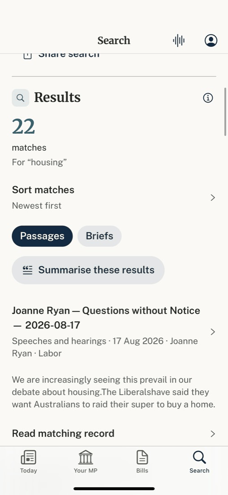
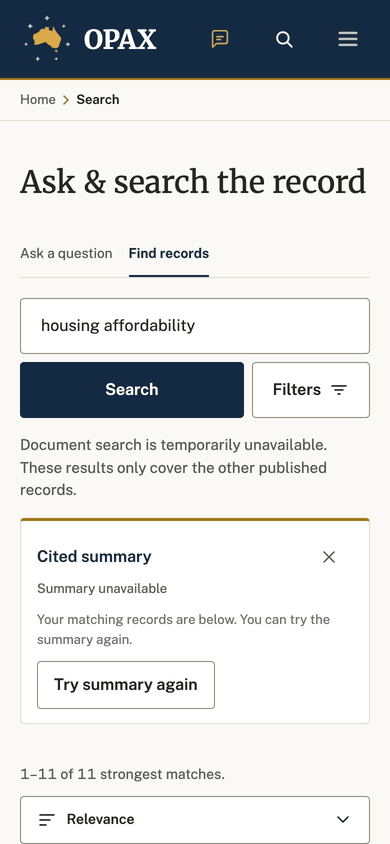

The first result should be on the first screen. The query, the kind, the count and the controls fit in four lines; each result is one tappable row whose kind, date and speaker line is its provenance.
Before · iPhone, build 12 (fixture data), scrolled to results

1 2 3 4 5 6 7Before · web 390px, local render (document search off locally)

8 9 8After · iPhone wireframe
We are increasingly seeing this prevail in our debate about housing. The Liberals have said they want Australians to raid their super to buy a home.